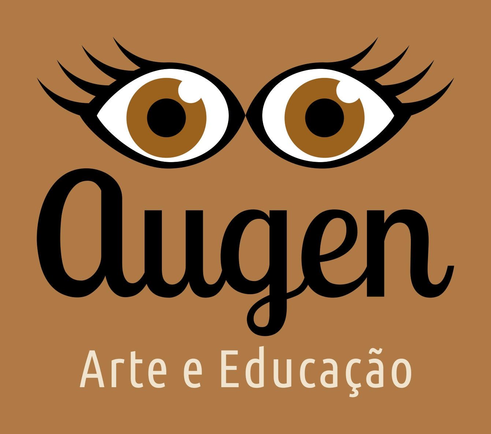
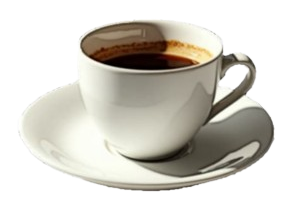

Configurações de cookies
Pular para conteúdo

Produção cultural, gestão de projetos de cultura e educação
Estamos atualizando nossa página para a versão 2026
Enquanto isto, fale conosco pelos contatos abaixo:
